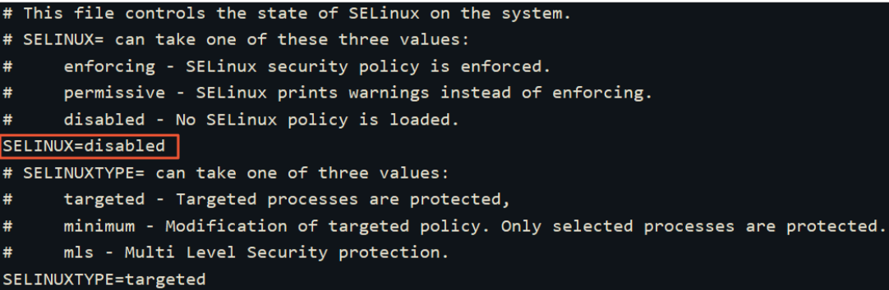

安装 samba
yum install samba
修改配置文件
修改配置文件 vim /etc/samba/smb.conf 添加要共享的目录
[opt] # 被共享目录的别名
path = /home/dccmmtop/opt # 要共享的目录
browseable = yes
writable = yes # 可以写入
valid users = dccmmtop # 用户，该用户要有目录的权限
create mode=0777
directory mode=0777
force create mode=0777
force directory mode=0777
添加用户
将用户 dccmmtop 设置为可以登录 samba
smbpasswd -a dccmmtop // 设置 dccmmtop 的samba服务密码，可与用户密码相同
smbpasswd -e dccmmtop // 启用samba用户，显示Enable则成功
关闭网络防火墙或添加端口
sudo systemctl stop firewalld.service
或者开放端口
sudo firewall-cmd --zone=public --add-port=139/tcp --permanent
sudo firewall-cmd --zone=public --add-port=445/tcp --permanent
sudo firewall-cmd --zone=public --add-port=137/udp --permanent
sudo firewall-cmd --zone=public --add-port=138/udp --permanent
sudo firewall-cmd --reload
sudo systemctl restart firewalld.service
关闭SELinux
安全增强型Linux（SELinux）是一个Linux内核的功能，它提供支持访问控制的安全政策保护机制
打开 /etc/selinux/config ,将 SELINUX 设置为 disabled

重启生效
临时修改
执行命令 setenforce 0 临时关闭SELinux
运行命令getenforce，验证SELinux状态为disabled，表明SELinux已关闭。
重启服务
systemctl restart smb.service // 不报错说明没问题
windows 挂载
开启windows SMB 服务，如下
映射网络位置

 之后输入上面设置的用户名密码就可以了
之后输入上面设置的用户名密码就可以了